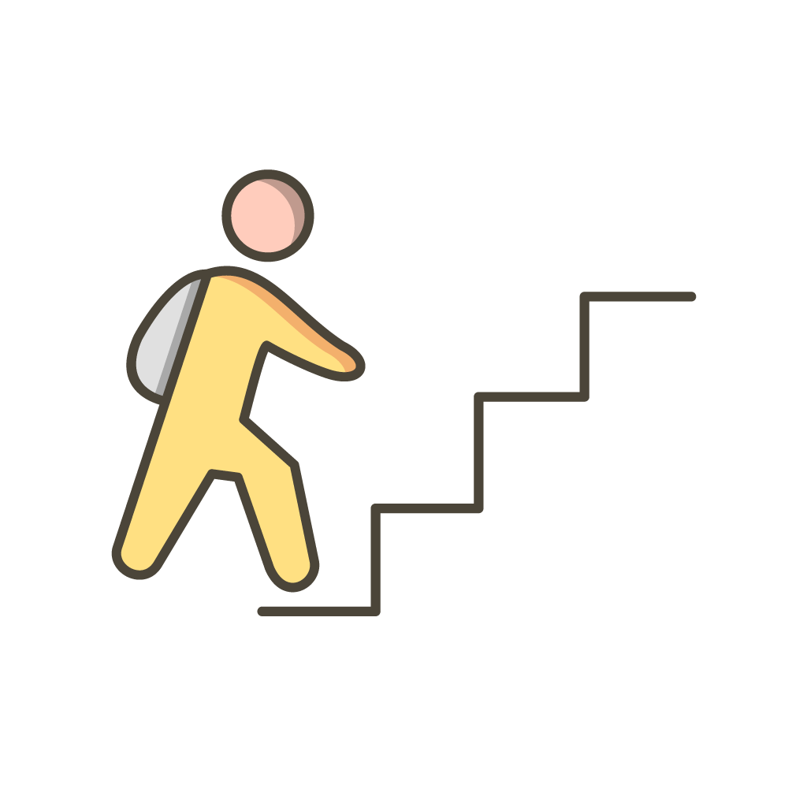

, Resides in
, Resides in 
About Me
I'm Rabin, currently living in the United Kingdom. I graduated from the University of East London on Computing. I developed my interest in Web Development during college as I found coding very fun & interesting. I love everything about websites.
I have experience working for a retail company as a store supervisor where my role was to interact with customers effectively & provide great customer service.
Some of the skills I have gained from the areas I have been exposed to are communication, teamwork, time management. I am always looking forward to developing my skills & knowledge.
In my free time, I like to read books, watch movies & spend quality time with friends & families. I also like to experience new things from which I can obtain new skills & knowledge.
Goals
I would like to pursue my career in the Web Development field and work as a Front End Web Developer. To help me achieve my goals, I have joined Techdegree Programme. I will use this platform to extend my web development knowledge and see myself progressing in the following languages:
- HTML
- CSS
- JavaScript
Objectives
My objectives are to work hard towards my goal. I will do this by focusing on each unit provided by Treehouse and keeping a track of my progress to keep me motivated.
 After the completion of my Techdegree programme, I would like to apply for Front End Web Development roles and showcase the skills and knowledge I obtained through this programme.
After the completion of my Techdegree programme, I would like to apply for Front End Web Development roles and showcase the skills and knowledge I obtained through this programme.